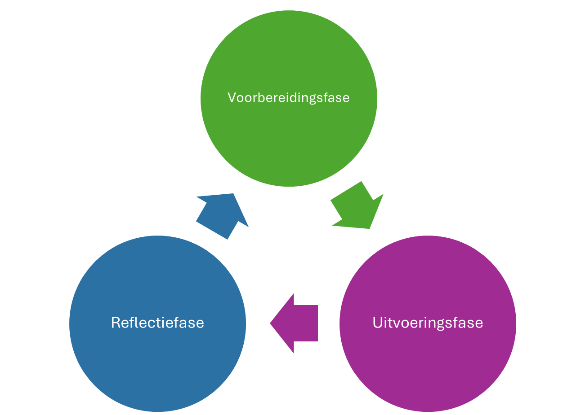
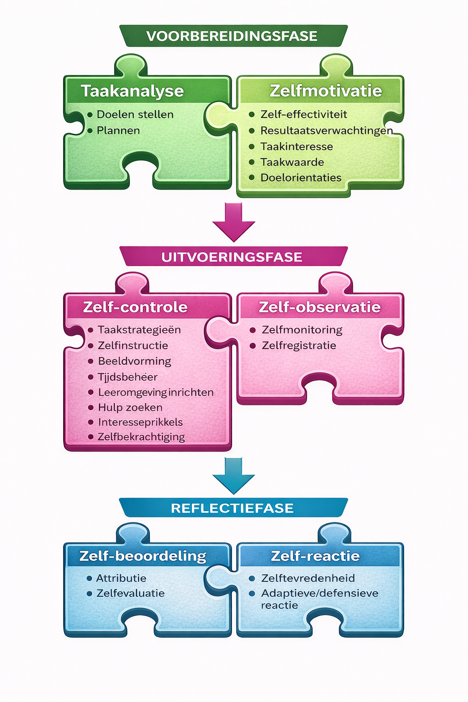

Professionaliseringstraject
Zelfregulerend leren in de praktijk
Een traject in co-regulatie – met concrete weekopdrachten en reflectie.
Professionaliseringstraject
Zelfregulerend Leren (ZRL)
Introductie – voor leerkrachten (van leerlingen laatste graad lager of eerste graad secundair onderwijs)
Welkom bij het leertraject Zelfregulerend Leren (ZRL)
Heel fijn dat je zelfregulerend aan de slag wil! We gaan er samen voor.
Dit traject dompelt je onder in de ZRL-mindset – als leraar én als lerende.
1. In de spiegel: hoe zelfregulerend ben ik?

Denk even terug aan een recent moment waarop je iets nieuws wilde leren of verbeteren in je klaspraktijk.
- Hoe ben je gestart?
- Heb je een concreet doel geformuleerd?
- Heb je vooraf nagedacht over je aanpak?
- Wat deed je wanneer het moeilijk werd?
- Heb je achteraf geëvalueerd of je doel bereikt was?
Misschien herken je dit:
- Je plant een nieuwe lessenreeks en merkt dat je gaandeweg moet bijsturen.
- Je wil sterker differentiëren, maar stelt het uit omdat het overweldigend voelt.
- Je start enthousiast met een idee, maar verliest focus wanneer het druk wordt.
Dat ís zelfregulatie in actie — of net het zoeken ernaar.
De komende weken plaatsen we ons bewust in de positie van lerende. Net zoals onze leerlingen ervaren we wanneer leren vlot loopt en wanneer niet. Zo ontdekken we wat ondersteunend werkt.
2. Professionaliseringstraject Zelfregulerend Leren (ZRL)
A. WAT is zelfregulerend leren?
Zelfregulerend leren (ZRL) betekent dat een lerende zijn leerproces actief stuurt: voor het leren, tijdens het leren en na het leren.
Korte quiz: Over wat gaat dit?
Wat proberen onderstaande leerkrachten bij hun leerlingen te stimuleren?
- De leerkracht demonstreert hoe de leerlingen de Cornell methode kunnen toepassen om een hoofdstuk samen te vatten.
- De leerkracht werkt met het systeem Boek – Buur – Baas (BBB) voor het vragen van hulp
- De leerkracht bespreekt met zijn leerlingen een video over het falen van bekende personen
- De leerkracht laat de leerlingen na hun toets reflecteren over de fouten die ze maakten, onder welke soort ‘foutcategorie’ deze vallen en hoe ze kunnen bijsturen
- A Metacognitieve vaardigheden
- B Cognitieve vaardigheden
- C Affectieve vaardigheden
- D Gedrag/organisatievaardigheden
Antwoorden
- 1B: De Cornell methode is een manier om leerstof te verwerken. Zo trainen de leerlingen cognitieve vaardigheden.
- 2D: De BBB methode stimuleert hulpzoekend gedrag bij leerlingen. Ook dit is zelfregulatie: wat doe ik als ik het even niet meer weet?
- 3C: De leerkracht zet in op de affectieve kant van het leren, en de bewustwording dat falen bij het leren hoort.
- 4B: Reflecteren is een metacognitieve vaardigheid. De leerlingen zoeken uit welke soort fouten ze maken en hoe ze kunnen bijsturen.
Het bekendste model rond zelfregulerend leren (Zimmerman, 2009) spreekt over 21 vaardigheden in deze vier domeinen:
Cognitieve vaardigheden
Strategieën om leerstof te verwerken en organiseren (bv. samenvatten, visualiseren, verbanden leggen, herhalen…)
Metacognitieve vaardigheden
De “manager van het leren” (bv. plannen, strategie kiezen, jezelf testen, evalueren en bijsturen)
Motivationele/affectieve vaardigheden
Strategieën om motivatie en emoties te reguleren (bv. jezelf positief toespreken, nut inzien, doorzetten)
Gedrags- of organisatievaardigheden
Gedrag dat het leren ondersteunt (bv. hulp zoeken, werkplek organiseren)
Dit overzicht is gebaseerd op het werk van Sins (2023), Peeters (2022) en Dijkstra (2018).
Zimmerman plaatst deze vaardigheden in een cyclisch model


Dit schema – en de verder uitwerking ervan - is gebaseerd op de 6 clusters ZRL-vaardigheden zoals vooropgesteld in het Europees project tMail, geleid door Jeltsen Peeters.- Voorbereidingsfase: vóór het leren (plannen en voorbereiden)
- Uitvoeringsfase: tijdens het leren (monitoren en volhouden)
- Reflectiefase: na het leren (evalueren en bijsturen)
Zelfregulerend leren is dus geen losse techniek, maar een proces dat zich herhaalt en verdiept.
Dat proces hoef je niet alleen te lopen. Het begrip ZELFregulatie wordt soms verkeerd geïnterpreteerd als iets dat je vooral zelf of zelfstandig moet gaan doen. Daarom spreekt men vaak over co-regulatie, want zelfregulatie ontwikkelt zich in interactie met anderen!
B. WAAROM starten we bij onszelf? WAAROM schakelen we ook een buddy in?
Het doel van dit professionaliseringstraject is de zelfregulerende vaardigheden van jouw leerlingen te versterken (cyclus 2, na de kerstvakantie).
Maar om dat goed te kunnen doen, kijken we EERST naar onze eigen zelfregulatie (cyclus 1, voor de kerstvakantie). We kunnen zelfregulerend leren niet tastbaar genoeg “uitleggen” zonder het zelf te ervaren.
Die ervaring toetsen we af aan (o.a.) onze buddy. We werken dus in co-regulatie: we leren van en met elkaar, online en tijdens fysieke bijeenkomsten. We ondersteunen elkaar terwijl we ons eigen leerproces reguleren.
Zoals Sins (2023) stelt: “Zelfregulerend leren kan je niet zelfregulerend leren.”
Hmmm… Co-regulatie, leerproces reguleren? (klik hier voor meer info)
Zelfregulerend leren gaat over je leerproces sturen door het gebruiken van (meta)cognitieve en motivationale/affectieve strategieën om je leerdoelen te bereiken. (vereenvoudiging definities Pintrich, 2000 & Sins, 2023)
Co-regulatie wil zeggen dat leerlingen, leerkrachten en medeleerlingen continu elkaars leerproces reguleren. Je leert nooit los van de omgeving maar van en met elkaar (Last, 2025)
C. WANNEER doorlopen we de cyclus?
Gedurende vier weken doorlopen we stap voor stap de ZRL-cyclus tweemaal, één keer voor en één keer na de kersvakantie.
Elke week:
- klik je op de opdracht van die week,
- werk je aan jouw leerdoel,
- reflecteer je volgens de fase van de cyclus (voor – tijdens – na).
🔁 Eerste cyclus – jij als lerende
Je werkt aan een eigen pedagogisch of didactisch doel dat niet rechtstreeks verbonden is aan ZRL bij leerlingen.
Bijvoorbeeld:
- lesmateriaal uitwerken rond een bepaald thema
- remediërings- of evaluatiemateriaal herwerken
- aanpassingen voor individuele leerlingen
- aanpak van leerlingen met specifieke zorgbehoeften
Je ervaart zelf hoe het is om ZRL-gewijs te werken.
De eerste cyclus sluiten we af met een online reflectiegesprek. Zo zorgen we voor een sterke start van de tweede cyclus. Het einde van een ZRL-cyclus bepaalt immers de start van een volgende cyclus.
🔁 Tweede cyclus – jouw leerlingen
Je stelt je een doel voorop waarbij je expliciet de zelfregulatie van je leerlingen wil stimuleren. We werken dit opnieuw stap voor stap uit, ZRL-gewijs.
Na vier weken komen we met de andere duo’s samen om te reflecteren, good practices uit te wisselen en elkaar te inspireren.
Kortom: we dompelen je echt onder in de ZRL-mindset! Het wordt een fijn avontuur!
D. HOE verloopt het traject?
Het online traject doorloop je individueel, telkens met een duidelijk doel per week. Daarnaast:
- stem je regelmatig af met je buddy op school
- zijn wij (Griet en Nathalie) beschikbaar voor vragen
We bieden begeleiding aan de hand van de 4 effectieve ondersteuningsvormen voor ZRL (Peeters, 2022):
- expliciet : door uitleg te geven over de verschillende ZRL-vaardigheden en hoe deze eruit zien,
- impliciet : door te modelleren hoe je ZRL-vaardigheden inzet en je aan te moedigen deze actief te gebruiken in functie van je doel,
- indirect : door je structuur, ondersteuning en oefenkansen te bieden om met je eigen ZRL-vaardigheden aan de slag te gaan.
- Gericht op transfer : door inspiratie en good practices aan te bieden die je kan meenemen naar je leerlingen (cyclus 2), aan de hand van dezelfde ondersteuningsvormen

Even herhalen
We gaan
- Onze zelfregulerende vaardigheden gebruiken om ons leerdoel te bereiken / leervraag te beantwoorden
- In Co-regulatie
- En worden hierbij telkens op weg geholpen door expliciete directe ondersteuning, impliciete directe ondersteuningen indirecte ondersteuning
- Om zo onze eigen zelfregulerende vaardigheden nog beter te leren kennen (cyclus 1), en daarna de transfer naar onze leerlingen te maken (cyclus 2)
Wist-je-datje: wetenschappelijke evidentie geeft aan dat we gespreid moeten herhalen om zaken in ons geheugen te verankeren (=distributed retrieval practice)
3. Toepassing – jouw leerdagboek

Zelfregulerend leren vraagt actie én reflectie. Elke week gaan we aan de slag, in of voor onze klas én met ons leerdagboek.
📓 Leerdagboekopdracht
Met welke leervraag of welk leerdoel wil jij de komende vier weken aan de slag?
Noteer voor jezelf maximaal drie mogelijke ideeën. We bespreken deze tijdens het introgesprek.
Neem alvast een eerste stap. Noteer per doel het volgende:
- Waarom is dit doel voor jou belangrijk?
- Wat hoop je na vier weken anders te kunnen of te doen?
We kijken ernaar uit om samen dit avontuur aan te gaan. Je leert niet alleen over zelfregulerend leren, je gaat er zelf mee aan de slag.
Klaar om te starten? Na het intakegesprek houdt niets je meer tegen.
Klik op de juiste week (in het blauw hieronder) en go for it!
Overzicht
Klik door naar de weekpagina’s.